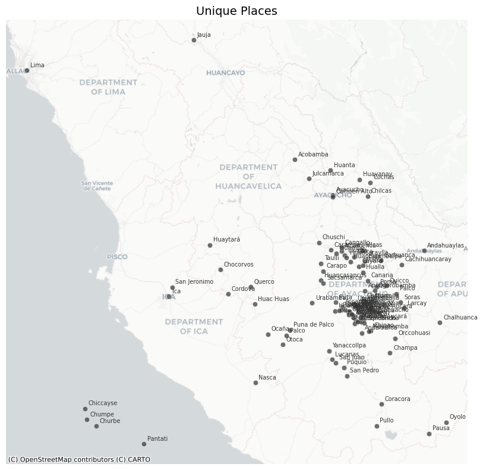

import pandas as pdPlace Name Normalization
The resulting dataset (data/clean/places.csv) serves as the authoritative lookup table for all place references across the project, enabling consistent spatial analysis and record linkage.
Historical documents present significant challenges in place name identification due to spelling variations, ambiguous toponyms, and evolving geographic nomenclature. This notebook builds an authoritative gazetteer of unique places from two sources:
- Collaborator GIS data: A curated GeoJSON (
data/testing/toponimos.geojson) compiled by Grecia Roque from primary sources, providing canonical names, verified coordinates, and known spelling variants. - Record matching: Raw place mentions extracted from the sacramental records are linked to the GeoJSON entries via exact and fuzzy string matching.
Data Preparation
We begin by loading the cleaned sacramental records, which have already undergone date normalization and attribute harmonization. Place names at this stage retain their original spelling variations as recorded in the historical documents.
GEOJSON_PATH = '../data/manual/toponimos.geojson'BAUTISMOS_HARMONIZED = pd.read_csv("../data/clean/bautismos_clean.csv")
MATRIMONIOS_HARMONIZED = pd.read_csv("../data/clean/matrimonios_clean.csv")
ENTIERROS_HARMONIZED = pd.read_csv("../data/clean/entierros_clean.csv")
BAUTISMOS_HARMONIZED| file | identifier | event_type | event_date | baptized_name | baptized_birth_place | baptized_birth_date | baptized_legitimacy_status | father_name | father_lastname | ... | godmother_lastname | godmother_social_condition | event_place | event_geographic_descriptor_1 | event_geographic_descriptor_2 | event_geographic_descriptor_3 | event_geographic_descriptor_4 | event_date_precision | baptized_birth_date_precision | baptized_lastname | |
|---|---|---|---|---|---|---|---|---|---|---|---|---|---|---|---|---|---|---|---|---|---|
| 0 | APAucará LB L001 | B001 | Bautizo | 1790-10-04 | domingo | NaN | 1790-08-04 | Hijo legitimo | lucas | ayquipa | ... | NaN | NaN | Pampamarca | Aucara | Pampamarca | NaN | NaN | exact | exact | ayquipa |
| 1 | APAucará LB L001 | B002 | Bautizo | 1790-10-06 | dominga | NaN | 1790-08-04 | Hija legitima | juan | lulia | ... | NaN | NaN | Pampamarca | Aucara | Pampamarca | NaN | NaN | exact | exact | lulia |
| 2 | APAucará LB L001 | B003 | Bautizo | 1790-10-07 | bartola | NaN | 1790-08-04 | Hija legitima | jacinto | quispe | ... | pocco | NaN | Pampamarca | Aucara | Pampamarca | NaN | NaN | exact | exact | quispe |
| 3 | APAucará LB L001 | B004 | Bautizo | 1790-10-20 | francisca | NaN | 1790-10-15 | Hija legitima | juan | cuebas | ... | guillen | NaN | Aucara | Aucara | NaN | NaN | NaN | exact | exact | cuebas |
| 4 | APAucará LB L001 | B005 | Bautizo | 1790-10-20 | pedro | NaN | 1790-10-19 | Hijo legitimo | santos | manxo | ... | santiago | NaN | Aucara | Aucara | NaN | NaN | NaN | exact | exact | manxo |
| ... | ... | ... | ... | ... | ... | ... | ... | ... | ... | ... | ... | ... | ... | ... | ... | ... | ... | ... | ... | ... | ... |
| 6335 | APAucará LB L004 | B2042 | Bautizo | 1888-12-10 | leocadio | NaN | 1888-12-09 | Hijo natural, mestizo | miguel | pacheco | ... | NaN | NaN | Aucará | Aucará | Aucará | NaN | NaN | exact | inferred_from_age | pacheco |
| 6336 | APAucará LB L004 | B2043 | Bautizo | 1888-12-11 | mariano concepcion | NaN | 1888-12-07 | Hijo legítimo, indio | facundo | vega | ... | NaN | NaN | Aucará | Aucará | Aucará | NaN | NaN | exact | inferred_from_age | vega |
| 6337 | APAucará LB L004 | B2044 | Bautizo | 1888-12-12 | ambrosio | NaN | 1888-12-06 | Hijo legítimo, indio | ysidro | ccasane | ... | NaN | NaN | Aucará | Aucará | Mayobamba | NaN | NaN | exact | inferred_from_age | ccasane |
| 6338 | APAucará LB L004 | B2045 | Bautizo | 1888-12-15 | francisco | NaN | 1888-11-30 | Hijo legítimo, indio | mariano | lopez | ... | NaN | NaN | Aucará | Aucará | Huaicahuacho | NaN | NaN | exact | inferred_from_age | lopez |
| 6339 | APAucará LB L004 | B2046 | Bautizo | 1888-12-16 | laureana | NaN | 1888-12-01 | Hija legítima, india | bernarda | champa | ... | de la cruz | NaN | Aucará | Aucará | Chacralla | NaN | NaN | exact | inferred_from_age | champa |
6340 rows × 29 columns
Extract Unique Place Mentions from Records
We collect every distinct place string appearing in the three sacramental record types. These raw mentions retain original colonial spelling variations and will be linked to the authoritative gazetteer in the next step.
bautismos_place_columns = [
'baptized_birth_place', 'event_place',
'event_geographic_descriptor_1', 'event_geographic_descriptor_2',
'event_geographic_descriptor_3', 'event_geographic_descriptor_4',
]
matrimonios_place_columns = [
'husband_birth_place', 'husband_resident_in',
'wife_birth_place', 'wife_resident_in',
'event_place',
'event_geographic_descriptor_1', 'event_geographic_descriptor_2',
'event_geographic_descriptor_3', 'event_geographic_descriptor_4',
'event_geographic_descriptor_5', 'event_geographic_descriptor_6',
]
entierros_place_columns = [
'event_place', 'deceased_birth_place', 'burial_place',
'event_geographic_descriptor_1', 'event_geographic_descriptor_2',
'event_geographic_descriptor_3', 'event_geographic_descriptor_4',
]
def available_cols(df, cols):
return [c for c in cols if c in df.columns]
all_place_values = pd.concat([
BAUTISMOS_HARMONIZED[available_cols(BAUTISMOS_HARMONIZED, bautismos_place_columns)].stack(),
MATRIMONIOS_HARMONIZED[available_cols(MATRIMONIOS_HARMONIZED, matrimonios_place_columns)].stack(),
ENTIERROS_HARMONIZED[available_cols(ENTIERROS_HARMONIZED, entierros_place_columns)].stack(),
])
raw_mentions = sorted({
m.strip()
for val in all_place_values.dropna().astype(str)
for m in val.split('|')
if m.strip() and len(m.strip()) > 2
})
print(f"Unique raw place mentions found in records: {len(raw_mentions)}")Unique raw place mentions found in records: 284Build Final Gazetteer (places.csv)
We combine the authoritative GeoJSON attributes with the mentioned_as lists derived from the matching step. The mentioned_as column is consumed by Persona.py to standardize place names across the personas table.
Schema note:
standardize_labelholds the canonical place name;mentioned_asis a Python-serialized list of all raw strings known to map to this entry (consumed byPersona._build_place_lookup()).
from collections import defaultdict
# Group matched raw mentions by lugar_id
mentioned_as_map: dict = defaultdict(list)
for _, row in match_df[match_df['lugar_id'].notna()].iterrows():
mentioned_as_map[int(row['lugar_id'])].append(row['raw_mention'])
def merge_mentions(row):
"""Union of record-derived mentions and known alt names from GeoJSON."""
known = [n.strip() for n in str(row['alt_names']).split('|') if n.strip()]
# Also include each segment of a multi-name canonical (e.g. "Ayacucho|Huamanga")
known += [n.strip() for n in str(row['place_name']).split('|')[1:] if n.strip()]
from_records = mentioned_as_map.get(int(row['lugar_id']), [])
seen, merged = set(), []
for item in from_records + known:
if item not in seen:
seen.add(item)
merged.append(item)
return merged
result_df = gazetteer.copy()
result_df['place_id'] = result_df['lugar_id']
result_df['language'] = 'es'
result_df['source'] = 'Grecia Roque (collaborator GIS data)'
result_df['uri'] = None
result_df['country_code'] = 'PE'
result_df['mentioned_as'] = result_df.apply(merge_mentions, axis=1)
result_df = result_df.set_index('place_id')
result_df[['standardize_label', 'latitude', 'longitude', 'place_type', 'es_parte', 'mentioned_as']].head(10)| standardize_label | latitude | longitude | place_type | es_parte | mentioned_as | |
|---|---|---|---|---|---|---|
| place_id | ||||||
| 1 | Accanta | -14.15538 | -74.14154 | caserio | None | [Accanta] |
| 2 | Accenana | -14.20972 | -74.06929 | caserio | None | [Accenana, Accenana, caserio] |
| 3 | Acobamba | -12.84438 | -74.57341 | iglesia parroquial | None | [Acobamba] |
| 4 | Alcamenca | -13.65741 | -74.14712 | pueblo | 79 | [Alcamenca, Alcamenga] |
| 5 | Amaycca | -14.16048 | -74.01614 | caserio | None | [Amaicca, Amaica] |
| 6 | Andamarca | -14.38758 | -73.96198 | pueblo | 11 | [Andamarca] |
| 7 | Chuschi | -13.58502 | -74.35200 | parroquia | None | [Chuschi] |
| 8 | Aucará | -14.28099 | -73.97489 | iglesia parroquial|cementerio o panteón | None | [Aucara, Aucara, Otoca, Aucara, panteon genera... |
| 9 | Ayacucho | -13.16042 | -74.22573 | ciudad | None | [Ayacucho, Ayacuchoi, Huamanga] |
| 10 | Bisbicha | -14.18333 | -74.14321 | caserio|cementerio o panteón | None | [Visvicha, Visvicha, panteon, Visvicha, panteón] |
result_df.to_csv('../data/interim/unique_places_consolidated.csv', index=True)
print(f"Saved {len(result_df)} places to data/interim/unique_places_consolidated.csv")Saved 107 places to data/interim/unique_places_consolidated.csvVisual Inspection
The coordinates derive directly from the curated GeoJSON, so major geolocation errors are not expected. Nonetheless, a map-based inspection is useful to spot any UTM conversion issues or obvious coordinate outliers before writing the final data/clean/places.csv.
Tip: if a point appears clearly misplaced, add an entry to
places_to_fixin the cell below with the correct lat/lon.
import numpy as np
import geopandas as gpd
import contextily as ctx
import matplotlib.pyplot as pltdef plot_places_on_map(people_places_dataframe, place_column='place_name', map_title='Plot of Places'):
gdf = gpd.GeoDataFrame(
people_places_dataframe,
geometry=gpd.points_from_xy(
people_places_dataframe.longitude,
people_places_dataframe.latitude
),
crs="EPSG:4326"
).to_crs(epsg=3857) # Web Mercator for contextily tiles
fig, ax = plt.subplots(figsize=(10, 8))
gdf.plot(
ax=ax,
color='#333333',
alpha=0.7,
edgecolor='white',
linewidth=0.4
)
for _, row in gdf.iterrows():
ax.annotate(
row[place_column],
xy=(row.geometry.x, row.geometry.y),
xytext=(4, 4),
textcoords='offset points',
fontsize=7,
color='#333333'
)
ctx.add_basemap(ax, source=ctx.providers.CartoDB.Positron) # type: ignore
ax.set_axis_off()
ax.set_title(map_title, fontsize=14)
fig.tight_layout()
plt.show()plot_places_on_map(result_df, place_column='standardize_label', map_title='Unique Places')
Because coordinates originate from the collaborator’s GIS file, large-scale misplacements are rare. If any point appears clearly wrong, add a correction entry below.
# Add corrections here if any point appears misplaced in the map above.
# Format: {'place_name': <standardize_label>, 'latitude': <lat>, 'longitude': <lon>}
places_to_fix = []for place in places_to_fix:
mask = result_df['standardize_label'] == place['place_name']
for key, val in place.items():
if key != 'place_name':
result_df.loc[mask, key] = val
result_df.to_csv('../data/clean/places.csv', index=True)
print(f"Saved {len(result_df)} places to data/clean/places.csv")Saved 107 places to data/clean/places.csv# visually check the corrected places on the map
plot_places_on_map(result_df, place_column='standardize_label', map_title='Unique Places (Corrected)')